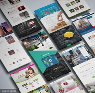
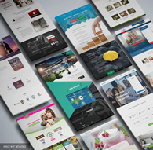

Ingeniero de Sistemas capacidades investigativas e informativas que permiten definir diseñar y
construir, evaluar, auditar y mantener sistemas informativos. Experiencia en Asesoría para la
adquisición, implementación y puesta en marcha de Tecnología Hardware y Software como
solución al mejoramiento y aprovechamiento de los procesos empresariales, con experiencia en la
dirección de proyectos de renovación de la infraestructura tecnológica de acuerdo a las
necesidades, tamaño y presupuesto de las empresas con proyección para la amortización del
constante cambio tecnológico, buen dominio del idioma ingles, capacidad para el entrenamiento y
dirección de personal en la reestructuración de procesos y plan de trabajo para la mejora de los
recursos involucrados. Habilidades en el desarrollo rápido de aplicaciones como soluciones
Software enfocados a los fortalecer los procesos de la cadena de valor de la empresa localización y
corrección de fallas a nivel Hardware y Software en equipos de Cómputo y móviles con planeación
de estrategias para prevención de errores y alta disponibilidad de los puestos de trabajo. Experiencia
en la recuperación de sistemas afectados por software dañino y malintencionado. Conocimiento
de: lenguajes de Programación aplicaciones web CMS bases de datos, lógica de programación,
administración de Bases de Datos mysql postgrest SQL server, arquitectura empresarial y Business
Process Modeling Notation desarrollo de proyectos informáticos, herramientas de de programación
estructurada, programación orientada a objetos y servicios tecnologías móviles e inalámbricas,
seguridad computacional administración de sistemas de información modelamiento de sistemas
organizacionales gestión de proyectos de software e informáticos y diseño construcción y
mantenimiento de aplicaciones y sitios web.


 
